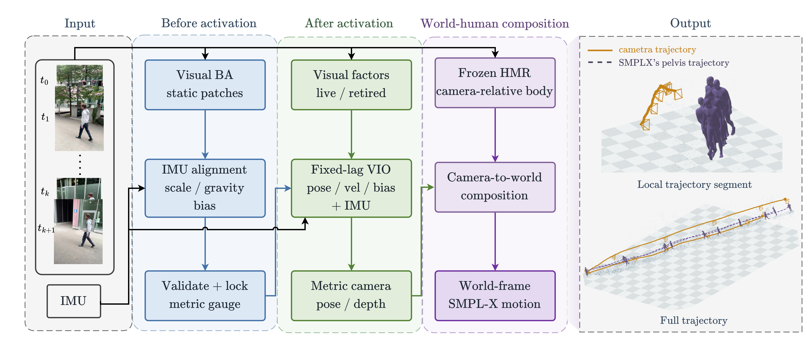

Establish metric scale
Align a visual–inertial initialization prefix and validate the metric state before activating navigation.
Visual–inertial estimation · Human motion
GAMVI
Recover metric camera motion.
Ground human motion in the metric world frame.
01 / Overview
Recovering human motion in world coordinates requires both camera-relative body predictions and a consistent camera trajectory. Errors in camera scale and motion propagate directly into the reconstructed human trajectory.
GAMVI combines a learned visual front end with inertial estimation. Metric initialization establishes scale before fixed-lag refinement. Current visual constraints and validated historical constraints then contribute to the navigation graph, while camera-relative human predictions remain fixed.
Rounded paper results against the paired visual-only baseline on room1–room6. These are not averages of the replicate-0 gallery.
02 / Method
Pi3MOS/FastBA provides visual constraints; a GTSAM fixed-lag graph estimates camera motion, velocity and IMU bias.

Align a visual–inertial initialization prefix and validate the metric state before activating navigation.
Replace the current visual factor and retain admissible historical constraints as states leave the active visual system.
Compose the estimated metric camera trajectory with fixed camera-relative body predictions.
03 / TUM-VI results
Six rooms, a fixed run-selection rule, and a common evaluation timeline.
| Method | ATE SE(3) ↓m | ATE Sim(3) ↓m | |log s| ↓ | Rotation ↓degrees | RPE translation ↓m |
|---|---|---|---|---|---|
| GAMVI | 0.101 | 0.097 | 0.0229 | 1.80 | 0.015 |
| DBA-Fusion | 0.185 | 0.184 | 0.0184 | 3.52 | 0.061 |
| DM-VIO | 0.114 | 0.095 | 0.0502 | 2.08 | 0.038 |
| MASt3R-Fusion | 0.227 | 0.221 | 0.0458 | 4.31 | 0.022 |
Paper aggregates: mean over three runs per room, then equally over room1–room6. All methods share evaluation timestamps within a run. RPE uses consecutive evaluated poses at native metric scale. Lower is better. DBA-Fusion reports room1–room5 only; its Room 6 runs have large trajectory errors and are excluded from its aggregate.
04 / EMDB results
All 22 sequences in the paper's evaluaton set, spanning indoor walking, stairs, long-range motion and non-walking activities.
EMDB uses GT-derived synthetic camera IMU
| Method / composition | WA-MPJPE100 ↓mm | W-MPJPE100 ↓mm | RTE ↓% |
|---|---|---|---|
| WHAM | 140.46 | 346.81 | 3.96 |
| GVHMR | 118.03 | 288.63 | 2.01 |
| TRAM | 78.35 | 220.11 | 1.50 |
| GAMVI + fixed GVHMR | 65.61 | 191.64 | 1.39 |
Paper values on the fixed 22-sequence cohort. W/WA-MPJPE use 100-frame segments; evaluation uses annotated valid frames.
Table and gallery use fixed GVHMR human predictions.
05 / Demonstrations
GAMVI + fixed GVHMR · EMDB synthetic IMU
Left: camera-space mesh overlay. Right: reconstructed human, camera trajectory and sparse map.